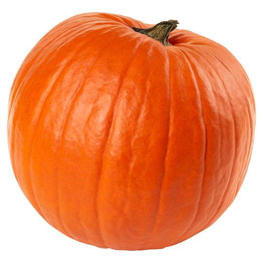

JESTES DYNIA
 Dynia to warzywo jesiennie
Niby spoko ale ilez mozna to zrec
Krem z dyni pure z dyni, no ale dynia ma wielu fanow i jesienia jest na nia sezon
Ty tez masz grono swoich fajnych znajomych
Tylko troszcz sie tez o nich nie tylko o siebie pamietaj